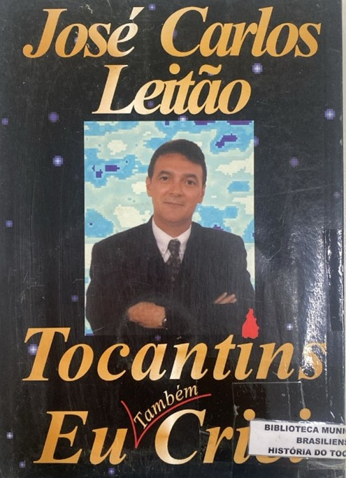

<style>
    section {
        display: flex;
        flex-direction: row;
        align-items: center;
        justify-content: center;
        gap: 40px;
        margin: 40px 0;
    }


    .conteudo {
        max-width: 1000px;
        font-family: Arial, sans-serif;
        font-size: 16px;
        line-height: 1.6;
        color: #333;
        text-align: justify;
    }

    .conteudo p {

        margin-bottom: 16px;
    }

    img {
        width: 300px;
        height: auto;
        border-radius: 8px;
    }
</style>

<section>
    <div class="conteudo">

        <h3>Tocantins: Eu Também Criei</h3>
        <h5>José Carlos Leitão</h5>
        <p>O livro Tocantins: Eu Também Criei, de José Carlos Leitão, lançado em 2001, apresenta de forma didática a
            luta pela criação do Estado, desde o século XVIII até sua conquista na Constituinte de 1988. A obra reforça
            que a emancipação não foi mérito individual, mas resultado da união do povo tocantinense.
            Organizado em sete capítulos, o livro aborda a história do povoamento da região, a Capitania de Goyaz, a
            Comarca do Norte e as lutas populares. Um destaque especial é dado à Conorte (Comissão de Estudos dos
            Problemas do Norte Goiano), que reuniu profissionais e idealistas para elaborar estudos e manter viva a
            causa separatista. Por fim, o autor apresenta as conquistas alcançadas nos primeiros dez anos após a criação
            do Estado.
        </p>

    </div>

    <div class="imagem">

        

    </div>
</section>